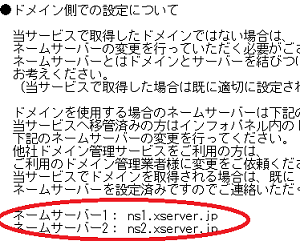
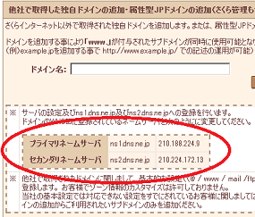
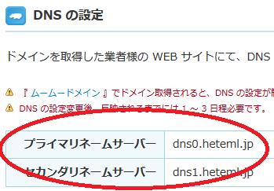
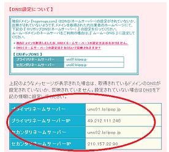
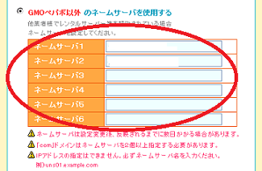
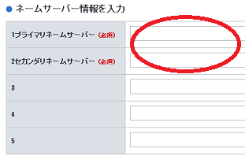
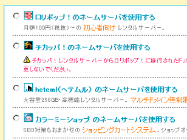
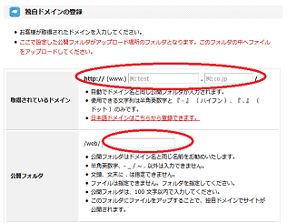
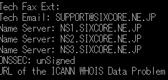

独自ドメインの設定方法
取得したドメインをレンタルサーバーで使用する際、まずはドメインの管理画面でネームサーバーを指定する必要があります。
手順は以下のとおりです。
① 契約したレンタルサーバーのネームサーバーを確認
② ドメインの管理画面にて「①で確認したネームサーバー」を設定
③ レンタルサーバー側でドメインの設定をし、公開するフォルダを指定
④ 指定した公開フォルダ内にindex.htmlページを作成
たいていはこれでそのドメインが使えるようになります。
①契約したレンタルサーバーでネームサーバーを確認
契約したレンタルサーバーのネームサーバー情報は、契約後に通知されてくるメール内に記載されていることが多いです。もしくは管理画面やヘルプページ、マニュアルなどを確認すれば、必ずどこかに記載されています。
・エックスサーバーでの例 （メールなど）

・さくらインターネットでの例 （管理画面など）

・ヘテムルでの例 （ヘルプページなど）

・ロリポップでの例 （マニュアルページなど）

ネームサーバーは２つのケースが多いですが、３つ、４つのケースもあります。
また、ネームサーバーのIPアドレスも表示されていることもありますが、そちらは特に必要ありません。サーバーのリニューアル等でIPアドレスが変更になるとサイトが表示されなくなるケースもあるため、できるだけIPアドレスではなく、URLで指定するとよいでしょう。
②取得したドメイン側でネームサーバーを設定
次に、取得したドメイン事業者の側で「①で確認したネームサーバー」を設定します。
・バリュードメインの場合

・ムームードメインの場合

・お名前ドットコムの場合

もし、ドメインとレンタルサーバーの契約を同じ会社でしている場合、利用しているサービスを選択するだけで簡単に設定できることもあります。
例えば、「ムームードメイン」と「ロリポップ」は共にGMOペパボ株式会社のサービスですので、ロリポップで使用するを選択すればＯＫです。

ただし、別々の会社で契約していても単にネームサーバーを指定すればいいだけですので、特に難しいということはありません。
③レンタルサーバー側でドメインを設定し、公開するフォルダを指定する
次に、契約したレンタルサーバー側で利用するドメイン名を登録します。
ドメインの設定後、たいていは公開するフォルダがそのドメイン名で自動で作成されますが、自分でフォルダを作成してから設定するケースもあります。
・ヘテムルでの例

例えば、homepage-tukurikata.com を登録すると、「homepage-tukurikata.com」というフォルダが自動で作成されます。
レンタルサーバーによって違いがありますが、一般的に「homepage-tukurikata.com」などのフォルダ内に、ホームページファイル用の「public_htmlフォルダ」や「メール用のフォルダ」、あるいは「アクセス解析ログのフォルダ」などに分かれているはずです。
htmlやcssなどのホームページファイルについては、「public_html」や「www」、「html」、あるいは「httpdocs」といったフォルダ内にアップロードしますが、サーバー会社によって仕様が異なるのでヘルプページなどを確認してみるとよいでしょう。
設定後、ファイルマネージャーで「public_html」などのフォルダ内を確認すると、トップページとなるindex.htmlページも一時的に自動で作成されているはずです。そのため、ドメインの設定が反映されると自動で作成されたページ内容が表示されることになります。
この自動で作成されたindex.htmlページは削除するか、上書きして自分のホームページファイルをアップロードするようにしましょう。
ちなみに、この公開フォルダの指定については、バリュードメイン運営による「コアサーバー」や「XREA」の場合は多少難しいかと思います。同期設定などがあるため、こちらのページをご参考に設定されることをおすすめします。
→ コアサーバーやXREAのドメイン設定方法
④フォルダ内にindex.htmlページを作成
フォルダ内には自動でindex.htmlページが作成されることが多いですが、そちらは一時的なものなので、そちらの方は削除して自分で作成しておくことをおすすめします。テンプレートなどを使ってサイトのトップページだけでも作成しておくとよいでしょう。
すべての設定が終わった後、自分のドメイン名にアクセスしてみて確認することになりますが、設定が反映されるまでにはある程度の時間がかかります。たいていは半日も経過すれば反映されますが、場合によっては２～３日程度かかる場合もあります。
設定が反映されると、作成したindex.htmlページの内容でサイトが表示されます。
■設定が反映されるまでの時間について
当サイト運営者の印象では、新規に取得したドメインの場合は反映がわりとはやいです。
けれども、既に取得済みドメインの設定を変更する場合などは、以前のネームサーバーの情報が残っていて時間のかかるケースもあります。
数分や数十分で反映されることはまずありませんが、数時間から半日程度で反映されるケースは割と多いです。１日～２日も経過すれば、たいていはほぼ反映されているかと思います。新規に取得したドメインで１週間もかかるケースは極めてまれです。
もし２～３日経過しても反映されない場合は、もう一度、設定内容を確認してみることをおすすめします。
この確認方法についてですが、whois情報を確認すると設定されているネームサーバーの情報も載ってますので、そちらが正しいかどうかをまずは確認してみましょう。もし間違っていたら、ドメイン側で正しい情報に修正します。
（※上記②の箇所を参照）
このwhois情報の確認については、バリュードメインなどでの「WHOIS検索」などを利用すると確認することができます。
例えば、こちらは当サイトのwhois情報ですが、ネームサーバーなどの情報も確認することができます。

もし、このwhoisで表示されているネームサーバーの情報が正しければ、レンタルサーバー側での設定の方が間違っているはずです。ヘルプを参照してもう一度確認してみるとよいでしょう。
（※上記③の箇所を参照）
それでも特に間違っていない場合、単にまだ設定が反映されていないだけか、index.htmlファイルのアップロード先が間違っている可能性があります。
（※上記④の箇所を参照）
また、W3Cのhtml Validatorやヘッダー情報、あるいはPC回線とは別のスマホ回線などからアクセスすると正常に表示されるものの、自分のパソコン回線では表示されない場合、ルーターを再起動すると表示されるケースもあります。
いずれにしても、１週間も待てばたいていは表示されるので気長に待ちましょう。
上記については取得したドメインで表示する「ホームページ」の設定方法になりますが、自分のドメインで「メールアドレス」も利用することができます。独自ドメインで使うメールアドレスの設定方法につきましては、こちらのページをご参照ください。